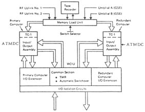

Computers in Spaceflight: The NASA
Experience
- - Chapter Three -
- - The Skylab Computer System
-
-
Hardware
-
-
- [68] The choice of a
central processor for the Skylab computer system marked a break
from NASA's previous practice. The Gemini and Apollo computer
systems were custom-built processors. Apollo did have an immediate
predecessor, but the number of changes necessary before flight
negated most of its resemblance to the Polaris system. To the
contrary, Skylab and, later, the Shuttle, used "off-the-shelf" IBM
4Pi series processors, though they both needed the addition of a
customized I/O system, a simpler and necessarily idiosyncratic
component. By using existing computers, NASA avoided the serious
problems associated with man-rating a new system encountered
during the Apollo program.
-
- The 4Pi descended directly from the System
360 architecture IBM developed in the early 1960s. Some 4Pis were
at work in aircraft by the latter part of that decade. The
top-of-the-line 4Pi is the AP-101, eventually used in the F-15,
B-52, and Shuttle. The version on board Skylab was the TC-l, which
used a 16-bit word, in contrast to the AP-101's 32 bits. A TC-l
processor, an interface controller, an I/O assembly, and a power
supply made up an ATMDC10. Each flight computer had a memory of 16,384
words11. This memory was a destructive readout core memory,
which means that the bits were erased as they were read and that
the memory location had to be refreshed with the contents of a
buffer register, which saved a copy of the bits before they were
passed on to the processor. The memory was in two modules of 8K
words each12. Addressing ranged from 0 to 8K, with a hardware
switch determining which module was being
accessed13. The redundant computer system was composed of two
processors attached to a single Workshop Computer Interface Unit.
The unit consisted of two I/O sections (one for each computer), a
common section, and a power supply14. Only the I/O section connected to the active
[69]
computer was powered. The inactive computer and its I/O section of
the interface unit were not powered. The common section contained
a 64-bit transfer register and timer associated with redundancy
management15. The transfer
register and timer were the only parts of Skylab that consisted of
triple modular redundant (TMR) circuits16. Basically, TMR circuits sent signals in triplicate
on separate channels and then voted. The single output from a TMR
voter represented either two or three identical inputs.
-
- The final component of the computer
subsystem was the Memory Load Unit. The original design did not
contain one, but, like the Gemini Auxiliary Tape Memory, engineers
later added it. Whereas the Gemini tape unit was useful in
handling memory overloads, designers included the Skylab tape unit
to further increase the reliability of the system. It carried a
16K software load and an 8K load that could be written into either
module of either memory of the ATDCs. If up to three modules
failed, the mission could continue with reduced capabilities with
an 8K program loaded into the remaining module. This raised the
total reliability of the system from a factor of 0.87 to
0.9717. The tape load would take a maximum of 11
seconds18.
-
- NASA decided to add the Memory Load Unit
in the summer of 1971, when both IBM and Marshall realized that a
Borg-Warner tape unit, like the two already used as telemetry
recorders, could be upgraded for program storage. IBM imposed some
manufacturing changes on the recorders (primarily piece part
screening) to make the process more nearly match the care taken in
constructing the computers19.
-
- NASA awarded the contract for the computer
system to IBM on March 5, 196920. By October, designers froze the choice of
processors and their configuration, a decision heavily influenced
by the concern for redundancy and reliability21. The first computer was delivered on December 23,
1969. IBM eventually built 10, the final 2 being the flight
versions, which went to NASA on February 11, 1972, over a year
before launch. Two of the ATMDCs and an interface unit were turned
over to IBM for use in testing both hardware and software,
ensuring that the final verification would be on actual equipment
rather than simulators22.
-
- IBM took great pride in delivering on time
without sacrificing reliability. In applying Saturn development
techniques to the Skylab equipment, for example, IBM required all
piece parts to exceed expected stress levels23, and prepared the ATMDC for thermal conditions, the
most dangerous stress to electronic components24. A number of design problems, including thermal and
vibration difficulties, analog conversion inaccuracies, and
interconnection failures, had to be overcome25. To make up time lost handling these problems, IBM
sometimes went to a 7-day, three-shift debugging
cycle26.
-
-
[70]
-

-
- Figure 3-2. The concept of Triple
Modular Redundancy.
-
-
[71]
-
- 
Figure 3-3. A block diagram of the
Skylab Computer System with the dual ATMDCs, tape memory, and
common section shown. (From IBM, Skylab Operation Assessment,
ATMDC, 1974)
-
-
- Probably due to the care taken in
manufacture, the computer system had no failures. A planned
ground-initiated switch-over from the primary to the secondary
computer occurred after 630 hours of orbital operations. The
second computer then ran the remainder of the 271-day
mission27. On the final day, the system did another
switch-over and used the tape unit for the first time, primarily
to prove that it would work. A transmission of software from the
ground to the computer was also practiced. IBM's reports of the
performance of the hardware are quite self-congratulatory but,
based on the actual record, justified.